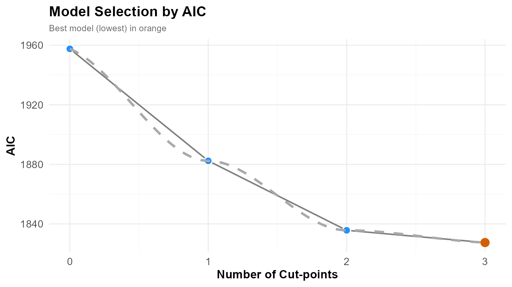
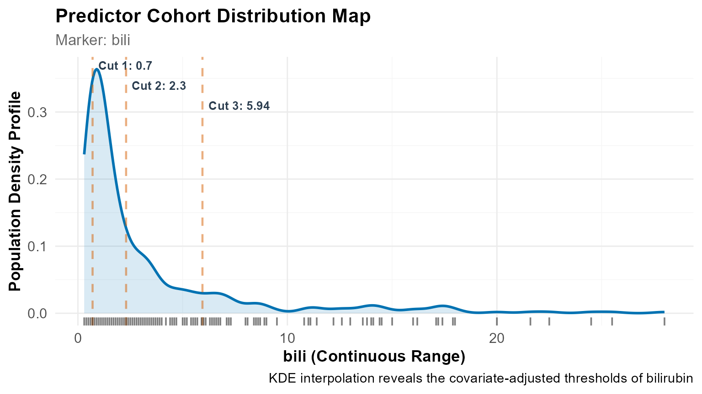
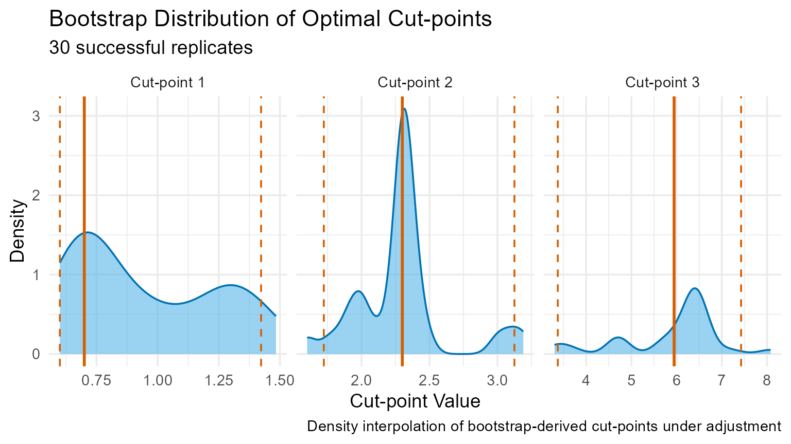
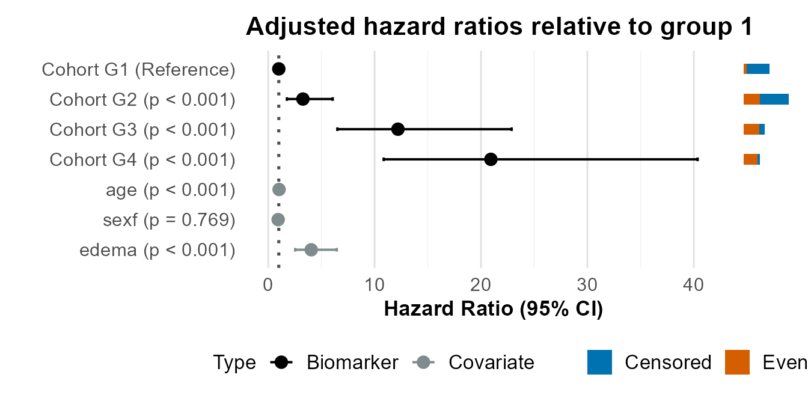
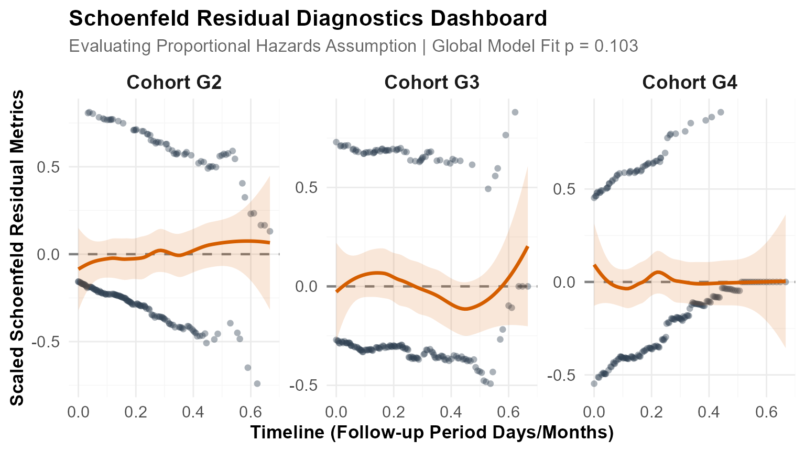
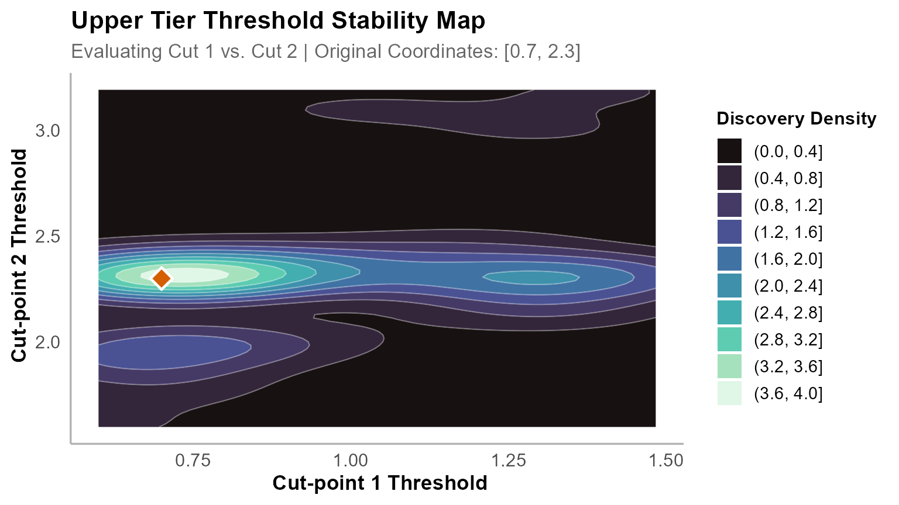
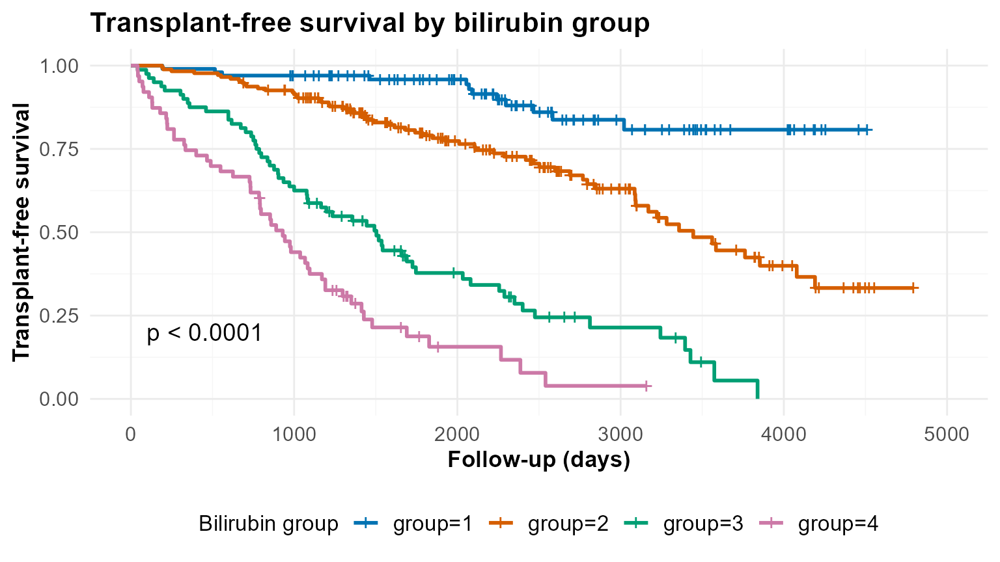

Analysing Clinical Survival Data with OptSurvCutR
Discovering Biomarker Thresholds and Tier Systems in Liver Disease
Payton Yau
2026-06-17
Source:vignettes/bilirubin.Rmd
bilirubin.RmdIntroduction
In clinical research, continuous biomarkers are frequently categorised into binary groups using arbitrary thresholds, such as median splits. Although convenient, this approach obscures meaningful biological variations and non-linear risk profiles.
The OptSurvCutR package is designed specifically to discover mathematically optimal thresholds. The core mechanism relies on a Genetic Algorithm—an evolutionary search engine capable of navigating complex, multi-dimensional data landscapes to identify multiple optimal cut-points simultaneously, a task that often causes traditional grid searches to fail due to computational limits.
Furthermore, the package features built-in statistical safeguards, including a two-tier Schoenfeld diagnostic check and a comprehensive four-tier validation stability system. Crucially, the optimization framework supports covariate adjustment. This ensures that the discovered biomarker thresholds provide independent prognostic value, even when controlling for established clinical confounders such as age, sex, or disease stage.
In this vignette, we apply this workflow to the classic Mayo Clinic Primary Biliary Cholangitis (PBC) dataset to evaluate serum bilirubin levels while controlling for confounding clinical factors, specifically patient age and the presence of edema.
1. Setup & Data Preparation
To begin the analysis, we load the required data manipulation libraries, graphics systems, and the underlying survival and optimisation packages into the R workspace.
library(survival)
library(dplyr)
library(ggplot2)
library(patchwork)
library(knitr)
library(cli)
library(OptSurvCutR)Next, we load the baseline clinical dataset into memory, remove records containing missing entries across our features of interest, and map all active survival statuses to isolate true endpoints.
data(pbc, package = "survival")
# Extract complete cases for our predictor, outcome, and clinical covariates
pbc_clean <- na.omit(pbc[, c("time", "status", "bili", "age", "sex", "edema")])
# Define the all-cause mortality survival event (1 or 2 = endpoint, 0 = censored)
pbc_clean$event <- as.integer(pbc_clean$status %in% c(1, 2))
head(pbc_clean)
#> time status bili age sex edema event
#> 1 400 2 14.5 58.76523 f 1.0 1
#> 2 4500 0 1.1 56.44627 f 0.0 0
#> 3 1012 2 1.4 70.07255 m 0.5 1
#> 4 1925 2 1.8 54.74059 f 0.5 1
#> 5 1504 1 3.4 38.10541 f 0.0 1
#> 6 2503 2 0.8 66.25873 f 0.0 1💡 Key Insight: Managing Skewed Distributions & Confounders > Raw clinical laboratory values are often heavily right-skewed. Because
OptSurvCutRevaluates survival using rank-based statistics (such as the Log-rank and Cox score tests), it relies on the rank order of patients rather than absolute numerical distances. This makes the algorithm mathematically robust against distributional skewness.By specifying
covariates = c("age", "sex", "edema"), the optimisation routine transitions from a univariate survival split to an adjusted Cox proportional hazards framework. This guarantees that the discovered cut-points reflect true changes in baseline risk independent of age, biological sex, or the physical presentation of edema.
2. The Three-Step Analysis Workflow
Step 1: Determine the Optimal Number of Cuts
Before identifying the specific locations of the thresholds, we must determine how many cut-points actually exist in our data when adjusting for our baseline clinical covariates.
Choosing an Information Criterion
The algorithm evaluates candidate models using an Information Criterion, which balances descriptive accuracy against model complexity:
| Criterion | Statistical Mechanism | Best Use Case |
|---|---|---|
| AIC | Imposes a light penalty for complexity. | Exploratory research; permits a higher number of cuts. |
| AICc | Applies a second-order correction to AIC for small sample sizes. | Small clinical datasets (). |
| BIC | Imposes a strict penalty based on the sample size logarithm. | Confirmatory research; favours simpler, highly robust models. |
We deploy the multi-model search routine to calculate fitness scores across various grouping parameters, enforcing safety boundaries so that the resulting risk cohorts do not become unsustainably small.
num_res <- find_cutpoint_number(
# ==========================================
# 1. CORE DATA & COVARIATE INPUTS
# ==========================================
data = pbc_clean, # The patient dataset
predictor = "bili", # The continuous biomarker
outcome_time = "time", # Survival time column
outcome_event = "event", # Survival event column
covariates = c("age", "sex", "edema"), # Confounders to control for
# ==========================================
# 2. SEARCH ENGINE SETTINGS
# ==========================================
method = "genetic", # The evolutionary search engine
criterion = "AIC", # Evaluates adjusted model fit
max_cuts = 5, # Test models ranging from 0 to 5 cuts
nmin = 0.15, # SAFETY LIMIT: Minimum 15% of patients per group
# ==========================================
# 3. ADVANCED GENETIC TUNING
# ==========================================
max.generations = NULL, # LIFESPAN: Number of evolutionary cycles to run
pop.size = NULL, # SEARCH PARTY: Number of random guesses per generation
boundary.enforcement = 2, # EDGE CONTROL: 2 = Soft boundary configuration
seed = 123 # REPRODUCIBILITY
)
#> ℹ nmin 0.15 is a proportion. Min. group size set to 62.
#> ℹ Finding optimal cut number: method = genetic
#> Running discrete genetic algorithm for 1 cut-point(s)...
#> Running discrete genetic algorithm for 2 cut-point(s)...
#> Running discrete genetic algorithm for 3 cut-point(s)...
#> Running discrete genetic algorithm for 4 cut-point(s)...
#> ! Model with 4 cut-point(s) collapsed: Subgroups violated the minimum 'nmin' constraint of 62 subjects.
#>
#> Running discrete genetic algorithm for 5 cut-point(s)...
#> ! Model with 5 cut-point(s) collapsed: Subgroups violated the minimum 'nmin' constraint of 62 subjects.We execute the summary() method to review detailed model
fit parameters.
summary(num_res)
#>
#> ── Optimal Cut-point Number Analysis (Genetic) ─────────────────────────────────
#> ✔ Best Model: 3 Cut-points (Criterion: AIC)
#> ℹ Optimal Thresholds: "0.9, 1.4, 3.5"
#>
#> ── 1. Model Comparison ──
#>
#> Marker num_cuts AIC Delta_AIC AIC_Weight Evidence
#> 0 1957.60 130.11 0% Minimal
#> 1 1882.37 54.88 0% Minimal
#> 2 1835.71 8.22 1.6% Minimal
#> > 3 1827.49 0.00 98.4% Substantial
#> ── 2. Clinical Risk Cohorts ──
#> Group N Events Median_CI
#> G1 142 23 NA (NA - NA)
#> G2 76 26 3561 (3086 - NA)
#> G3 102 59 2286 (1725 - 3222)
#> G4 98 78 980 (859 - 1235)
#> ── 3. Cox Proportional-Hazards ──
#> Group HR Lower Upper P_Value Signif
#> groupG2 2.169 1.236 3.809 0.007 **
#> groupG3 4.934 3.020 8.062 0.000 ***
#> groupG4 12.178 7.503 19.766 0.000 ***
#> age 1.025 1.011 1.039 0.001 ***
#> sexf 0.940 0.612 1.444 0.778
#> edema 4.965 3.099 7.955 0.000 ***
#> ℹ Overall Model: Concordance = 0.802 | Log-rank p = 0
#>
#> ── 4. Time-Dependent Diagnostics (Schoenfeld) ──
#>
#> ✔ Passed: The proportional hazards assumption holds across the follow-up period (Global p = 0.29).
#>
#> ── 5. Analysis Parameters ──
#>
#> * Search Method: Genetic
#> * Predictor: bili
#> * Criterion: AIC
#> * Maximum Cuts: 5
#> * Minimum Group Size (nmin): 62
#> * Covariates: age, sex, edemaTo easily track the inflection points where adding more thresholds yields diminishing mathematical returns, we plot the multi-model fitness curve.
plot(num_res) +
geom_smooth(
method = "loess",
se = FALSE,
colour = "darkgrey",
linetype = "dashed",
alpha = 0.5
)
#> `geom_smooth()` using formula = 'y ~ x'
#> Warning in simpleLoess(y, x, w, span, degree = degree, parametric = parametric,
#> : span too small. fewer data values than degrees of freedom.
#> Warning in simpleLoess(y, x, w, span, degree = degree, parametric = parametric,
#> : pseudoinverse used at -0.015
#> Warning in simpleLoess(y, x, w, span, degree = degree, parametric = parametric,
#> : neighborhood radius 2.015
#> Warning in simpleLoess(y, x, w, span, degree = degree, parametric = parametric,
#> : reciprocal condition number 0
#> Warning in simpleLoess(y, x, w, span, degree = degree, parametric = parametric,
#> : There are other near singularities as well. 4.0602
Interpretation: The model that minimises the information landscape layout is identified at 2 cut-points (which divides the patient cohort into 3 distinct risk groups). This confirms that even after controlling for the confounding baseline effects of age and sex, a multi-tier risk classification model is statistically superior to a traditional binary median split.
Step 2: Pinpointing the Exact Cut-point Values
This step forms the algorithmic core of OptSurvCutR. We
direct the search engine to locate the optimal dividing lines while
holding our adjusted clinical covariates constant.
We initiate the core optimisation loop, guiding the engine across the index coordinate topology to find the thresholds that maximise group risk divergence under active covariate adjustment.
cut_res <- find_cutpoint(
# ==========================================
# 1. CORE DATA & COVARIATE INPUTS
# ==========================================
data = pbc_clean,
predictor = "bili",
outcome_time = "time",
outcome_event = "event",
covariates = c("age", "sex", "edema"), # Adjusted during location discovery
# ==========================================
# 2. SEARCH ENGINE SETTINGS
# ==========================================
method = "genetic",
criterion = "logrank",
num_cuts = 3, # Setting 3 cuts for clinical tier separation
nmin = 0.15, # SAFETY LIMIT: Minimum patients per risk cohort
n_perm = 20, # Streamlined permutation cycle
# ==========================================
# 3. ADVANCED GENETIC TUNING
# ==========================================
max.generations = NULL,
pop.size = NULL,
boundary.enforcement = 2,
seed = 123,
n_cores = 1
)
#> ℹ nmin 0.15 is a proportion. Min. group size set to 62.
#> ℹ Starting regularized genetic search for 3 cut(s)...
#> ℹ Running 20 permutations to calculate adjusted p-value...Now, we request the optimisation summary report to extract the hazard thresholds, model coefficients, and preliminary diagnostics.
summary(cut_res)
#>
#> ── Optimal Cut-point Analysis for Survival Data (Genetic) ──────────────────────
#> ✔ Optimal Threshold(s): "0.7, 2.3, 5.945"
#> ℹ Permutation-Adjusted P-value (20 runs): 0.0476
#>
#> ── 1. Stratified Risk Cohorts ──
#>
#> Group N Events Median_Time OS Rate at T=4795
#> G1 100 12 NR (Not Reached) 80.8% (70.8-92.1)
#> G2 175 62 3445 33.3% (22.4-49.3)
#> G3 80 60 1504 0% (NA-NA)
#> G4 63 52 930 3.9% (0.6-24.4)
#> ── 2. Cox Proportional-Hazards ──
#> Group HR Lower Upper P_Value Signif
#> G2 3.267 1.759 6.066 0.000 ***
#> G3 12.197 6.502 22.881 0.000 ***
#> G4 20.929 10.853 40.359 0.000 ***
#> age 1.027 1.012 1.041 0.000 ***
#> sexf 0.938 0.613 1.435 0.769
#> edema 4.048 2.542 6.446 0.000 ***
#> ℹ Overall Model: Concordance = 0.811 | Log-rank p = 0
#>
#> ── 3. Time-Dependent Diagnostics (Schoenfeld) ──
#>
#> ✔ Passed: The proportional hazards assumption holds across the follow-up period (Global p = 0.103).
#>
#> ── 4. Analysis Parameters ──
#>
#> • Search Method: Genetic
#> • Predictor: bili
#> • Number of cuts: 3
#> • Minimum group size (nmin): 62
#> • Covariates: age, sex, edema
#> • Permutations: 20🔍 Automated Diagnostic Check: The Two-Tier Schoenfeld Diagnostic
When evaluating the summary() output, the package
automatically calculates a Schoenfeld residuals validation check against
the adjusted model matrix to verify whether the Proportional Hazards
assumption holds:
| Diagnostic Status | Statistical Property (Schoenfeld Test) | Clinical Implication |
|---|---|---|
| Tier 1 (Proportional) | The proportional hazards assumption holds (). | Your cut-points remain equally predictive on Day 1 as they do on Day 1,000. Reporting a standard adjusted Hazard Ratio is valid. |
| Tier 2 (Time-Varying) | The hazard ratio changes significantly over time (). | Your cut-point remains biologically valid, but its relative predictive power shifts over time. Consider reporting time-dependent Hazard Ratios. |
To visualise where these calculated cut-points cross the clinical cohort, we generate a plot mapping the continuous marker distribution.
plot(cut_res, type = "distribution") +
geom_rug(alpha = 0.5) +
labs(caption = "KDE interpolation reveals the covariate-adjusted thresholds of bilirubin")
Step 3: Validate Threshold Stability
We use Bootstrap Resampling to ensure that our covariate-adjusted thresholds reflect stable biology and are completely independent of sample-specific noise.
We run repetitive bootstrap sampling loops, forcing the optimisation engine to re-verify the marker thresholds across randomised slices of our patient cohort.
val_res <- validate_cutpoint(
# ==========================================
# 1. VALIDATION INPUTS
# ==========================================
cutpoint_result = cut_res,
num_replicates = 30, # 500+ is the standard for final publication
n_cores = 1,
# ==========================================
# 2. ADVANCED SETTINGS (Must match Step 2)
# ==========================================
max.generations = NULL,
pop.size = NULL,
boundary.enforcement = 2,
seed = 123
)
#> ℹ Using random seed 123 for reproducibility.
#> ℹ Bootstrap `nmin` not set. Using 55 (90% of original) to improve stability.
#> ℹ Validating 3 cut(s) from 'genetic' search using 'logrank' over regularized coordinate lattice.
#> ℹ Running 30 replicates sequentially (n_cores = 1).
#> Bootstrapping ■■■■ 10% | ETA: 11sBootstrapping ■■■■■ 13% | ETA: 12sBootstrapping ■■■■■■ 17% | ETA: 13sBootstrapping ■■■■■■■ 20% | ETA: 13sBootstrapping ■■■■■■■■ 23% | ETA: 13sBootstrapping ■■■■■■■■■ 27% | ETA: 13sBootstrapping ■■■■■■■■■■ 30% | ETA: 12sBootstrapping ■■■■■■■■■■■ 33% | ETA: 12sBootstrapping ■■■■■■■■■■■■ 37% | ETA: 11sBootstrapping ■■■■■■■■■■■■■ 40% | ETA: 11sBootstrapping ■■■■■■■■■■■■■■ 43% | ETA: 10sBootstrapping ■■■■■■■■■■■■■■■ 47% | ETA: 10sBootstrapping ■■■■■■■■■■■■■■■■ 50% | ETA: 9sBootstrapping ■■■■■■■■■■■■■■■■■ 53% | ETA: 8sBootstrapping ■■■■■■■■■■■■■■■■■■ 57% | ETA: 8sBootstrapping ■■■■■■■■■■■■■■■■■■■ 60% | ETA: 7sBootstrapping ■■■■■■■■■■■■■■■■■■■■ 63% | ETA: 7sBootstrapping ■■■■■■■■■■■■■■■■■■■■■ 67% | ETA: 6sBootstrapping ■■■■■■■■■■■■■■■■■■■■■■ 70% | ETA: 5sBootstrapping ■■■■■■■■■■■■■■■■■■■■■■■ 73% | ETA: 5sBootstrapping ■■■■■■■■■■■■■■■■■■■■■■■■ 77% | ETA: 4sBootstrapping ■■■■■■■■■■■■■■■■■■■■■■■■■ 80% | ETA: 4sBootstrapping ■■■■■■■■■■■■■■■■■■■■■■■■■■ 83% | ETA: 3sBootstrapping ■■■■■■■■■■■■■■■■■■■■■■■■■■■ 87% | ETA: 2sBootstrapping ■■■■■■■■■■■■■■■■■■■■■■■■■■■■ 90% | ETA: 2sBootstrapping ■■■■■■■■■■■■■■■■■■■■■■■■■■■■■ 93% | ETA: 1sBootstrapping ■■■■■■■■■■■■■■■■■■■■■■■■■■■■■■ 97% | ETA: 1s ✔ 30 replicates completed.We look at the aggregated validation metrics to review the underlying variance parameters across our calculated thresholds.
summary(val_res)
#> Cut-point Stability Analysis (Bootstrap)
#> ----------------------------------------
#> Original Optimal Cut-point(s): 0.7, 2.3, 5.945
#>
#> Bootstrap Distribution Summary
#> -----------------------------
#> Cut Mean SD Median Q1 Q3
#> 25% Cut1 0.947 0.290 0.830 0.700 1.275
#> 25%1 Cut2 2.290 0.341 2.300 2.142 2.339
#> 25%2 Cut3 5.892 1.094 6.353 5.700 6.447
#>
#> 95% Confidence Intervals
#> ------------------------
#> Lower Upper
#> Cut 1 0.600 1.423
#> Cut 2 1.723 3.125
#> Cut 3 3.372 7.426
#>
#> Validation Parameters
#> ---------------------
#> Replicates Requested: 30
#> Successful Replicates: 30 / 30 ( 100 %)
#> Failed Replicates: 0
#> Cores Used: 1
#> Seed: 123
#> Minimum Group Size (nmin): 55
#> Method: genetic
#> Criterion: logrank
#> Covariates: age, sex, edema
#>
#>
#> Stability Assessment:
#> ---------------------
#> Maximum CI Width (Relative to 10th-90th Percentile Range): 664.6%
#> ✔ Model Status: DISTINCT (Tier 2) - SEPARATION OVERRIDE
#> The relative mathematical variance is high (664.6%), but 95% Confidence
#> Intervals do not overlap.🔍 Automated Performance Grading: The Four-Tier Stability Assessment
Following bootstrap calculations, OptSurvCutR evaluates
both your Precision (Confidence Interval width relative
to the overall data range) and Validity (absence of
interval overlap), grading model health into four distinct performance
tiers:
- Tier 1 (OPTIMAL): Narrow intervals (CI Width ) paired with complete cohort separation.
- Tier 2 (DISTINCT): Zero overlap between confidence zones regardless of absolute width. Thresholds may float slightly, but risk boundaries remain clear.
- Tier 3 (CAUTION): Moderate parameter variance (CI Width ) accompanied by overlapping intervals.
- Tier 4 (UNSTABLE): High variance (CI Width ) with overlapping intervals, signaling severe data over-fitting.
For precise documentation, we compile our numerical confidence intervals directly into a clean markdown summary table.
knitr::kable(val_res$confidence_intervals, digits = 3, caption = "Covariate-Adjusted Stability Intervals for Bilirubin Risk Thresholds")| Lower | Upper | |
|---|---|---|
| Cut 1 | 0.600 | 1.423 |
| Cut 2 | 1.723 | 3.125 |
| Cut 3 | 3.372 | 7.426 |
To determine if our thresholds remain tightly anchored or scatter across iterations, we inspect the bootstrap density landscape.
plot(val_res) +
labs(caption = "Density interpolation of bootstrap-derived cut-points under adjustment")
3. Advanced Visualisation & Reporting
3.1 Group Composition Table
We can check the actual sample distributions and average baseline parameters across our newly established medical risk tiers.
final_dataset <- plot(cut_res, return_data = TRUE)
composition_table <- final_dataset %>%
group_by(group) %>%
summarise(
Bilirubin_Range = paste0(
round(min(factor), 3), " – ", round(max(factor), 3)
),
N = n(),
Deaths = sum(event),
Mean_Age = round(mean(age), 1),
Edema_Rate = round(mean(edema), 2)
)
knitr::kable(composition_table, caption = "Composition and Covariate Profiles of Discovered Bilirubin Risk Groups")| group | Bilirubin_Range | N | Deaths | Mean_Age | Edema_Rate |
|---|---|---|---|---|---|
| 1 | 0.3 – 0.7 | 100 | 12 | 51.0 | 0.04 |
| 2 | 0.8 – 2.3 | 175 | 62 | 51.0 | 0.07 |
| 3 | 2.4 – 5.9 | 80 | 60 | 49.4 | 0.09 |
| 4 | 6 – 28 | 63 | 52 | 51.4 | 0.28 |
3.2 Adjusted Hazard Ratio Forest Plot
(type = "forest")
We can plot a custom forest chart to display our adjusted hazard models relative to the low-risk baseline tier.
plot(cut_res,
type = "forest",
main = "Adjusted Mortality Hazard Ratios Relative to Group 1"
)
3.3 Time-Dependent Diagnostics
(type = "diagnostic")
We track whether our optimisation groups safely adhere to proportional variance targets across the complete time scope.
plot(cut_res, type = "diagnostic")
#> `geom_smooth()` using formula = 'y ~ x'
3.4 2D Cut-point Stability Surface
(plot_validation())
Rather than relying on blocky grids, plot_validation()
projects high-dimensional bootstrap convergence horizons onto a smooth
2D continuous contour map, highlighting exactly where our optimal
threshold combinations cluster.
plot_validation(val_res,
focus_cuts = c(1, 2),
main = "Upper Tier Threshold Stability Map"
)
3.5 Adjusted Kaplan-Meier Survival Curves
(type = "outcome")
We evaluate the clear divergence in survival over time by mapping the adjusted step functions for our risk groups.
plot(cut_res,
type = "outcome",
title = "PBC Survival by Bilirubin Tier (Covariate Adjusted)",
xlab = "Follow-up Time (Days)",
ylab = "Overall Survival Probability",
legend.title = "Bilirubin Tier"
)
#> Warning: Using `size` aesthetic for lines was deprecated in ggplot2 3.4.0.
#> ℹ Please use `linewidth` instead.
#> ℹ The deprecated feature was likely used in the ggpubr package.
#> Please report the issue at <https://github.com/kassambara/ggpubr/issues>.
#> This warning is displayed once per session.
#> Call `lifecycle::last_lifecycle_warnings()` to see where this warning was
#> generated.
3.6 Exporting Your Stratified Data
By passing return_data = TRUE, you can extract your
original clinical dataset paired with the newly calculated
group factor and original covariate assignments.
stratified_patients <- plot(cut_res, return_data = TRUE)
head(stratified_patients[, c("time", "event", "factor", "age", "sex", "edema", "group")])
#> time event factor age sex edema group
#> 1 400 1 14.5 58.76523 f 1.0 4
#> 2 4500 0 1.1 56.44627 f 0.0 2
#> 3 1012 1 1.4 70.07255 m 0.5 2
#> 4 1925 1 1.8 54.74059 f 0.5 2
#> 5 1504 1 3.4 38.10541 f 0.0 3
#> 6 2503 1 0.8 66.25873 f 0.0 24. Conclusion
This vignette demonstrates how OptSurvCutR controls for clinical confounding factors during optimal threshold selection. By providing a streamlined pipeline for covariate-adjusted optimisation, clinical scientists can establish reliable diagnostic thresholds that retain absolute structural validity across independent validation cohorts.
5. Session Information
Finally, we print our system specifications, environmental packages, and runtime tracking indices to ensure perfect documentation reproducibility.
sessionInfo()
#> R version 4.5.3 (2026-03-11 ucrt)
#> Platform: x86_64-w64-mingw32/x64
#> Running under: Windows 11 x64 (build 26200)
#>
#> Matrix products: default
#> LAPACK version 3.12.1
#>
#> locale:
#> [1] LC_COLLATE=English_United Kingdom.utf8
#> [2] LC_CTYPE=English_United Kingdom.utf8
#> [3] LC_MONETARY=English_United Kingdom.utf8
#> [4] LC_NUMERIC=C
#> [5] LC_TIME=English_United Kingdom.utf8
#>
#> time zone: Europe/London
#> tzcode source: internal
#>
#> attached base packages:
#> [1] stats graphics grDevices utils datasets methods base
#>
#> other attached packages:
#> [1] OptSurvCutR_0.9.9 cli_3.6.5 knitr_1.51 patchwork_1.3.2
#> [5] ggplot2_4.0.1 dplyr_1.2.1 survival_3.8-6
#>
#> loaded via a namespace (and not attached):
#> [1] gtable_0.3.6 xfun_0.54 bslib_0.11.0 htmlwidgets_1.6.4
#> [5] rstatix_0.7.3 lattice_0.22-9 vctrs_0.7.3 tools_4.5.3
#> [9] generics_0.1.4 parallel_4.5.3 tibble_3.3.1 pkgconfig_2.0.3
#> [13] Matrix_1.7-4 data.table_1.17.8 RColorBrewer_1.1-3 S7_0.2.1
#> [17] desc_1.4.3 lifecycle_1.0.5 compiler_4.5.3 farver_2.1.2
#> [21] textshaping_1.0.4 codetools_0.2-20 carData_3.0-5 htmltools_0.5.8.1
#> [25] sass_0.4.10 yaml_2.3.10 Formula_1.2-5 pillar_1.11.1
#> [29] pkgdown_2.2.0 car_3.1-3 ggpubr_0.6.2 jquerylib_0.1.4
#> [33] tidyr_1.3.1 MASS_7.3-65 cachem_1.1.0 survminer_0.5.1
#> [37] iterators_1.0.14 rgenoud_5.9-0.11 abind_1.4-8 foreach_1.5.2
#> [41] km.ci_0.5-6 nlme_3.1-168 tidyselect_1.2.1 digest_0.6.39
#> [45] purrr_1.2.0 labeling_0.4.3 splines_4.5.3 fastmap_1.2.0
#> [49] grid_4.5.3 magrittr_2.0.5 broom_1.0.10 withr_3.0.2
#> [53] scales_1.4.0 backports_1.5.1 rmarkdown_2.31 otel_0.2.0
#> [57] gridExtra_2.3 ggsignif_0.6.4 zoo_1.8-14 ragg_1.5.0
#> [61] evaluate_1.0.5 KMsurv_0.1-6 doParallel_1.0.17 viridisLite_0.4.2
#> [65] mgcv_1.9-4 survMisc_0.5.6 rlang_1.1.7 Rcpp_1.1.1-1.1
#> [69] isoband_0.2.7 xtable_1.8-4 glue_1.8.1 rstudioapi_0.19.0
#> [73] jsonlite_2.0.0 R6_2.6.1 systemfonts_1.3.1 fs_2.1.0```